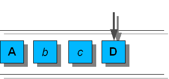
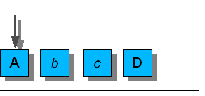

- java.lang.Object
-
- javax.swing.undo.AbstractUndoableEdit
-
- javax.swing.undo.CompoundEdit
-
- javax.swing.undo.UndoManager
-
- All Implemented Interfaces:
-
Serializable，EventListener，UndoableEditListener，UndoableEdit
public class UndoManager extends CompoundEdit implements UndoableEditListener
UndoManager管理列表UndoableEdits，提供了一种方法来撤消或恢复适当的编辑。 有两种方法可以向UndoManager添加编辑。 使用addEdit方法直接添加编辑，或者将UndoManager添加到支持UndoableEditListener的bean。 以下示例创建一个UndoManager，并将其作为UndoableEditListener添加到JTextField：UndoManager undoManager = new UndoManager(); JTextField tf = ...; tf.getDocument().addUndoableEditListener(undoManager);
Figure 1UndoManager维护编辑的有序列表和该列表中下一个编辑的索引。 下一个编辑的索引是当前编辑列表的大小，或者如果已经调用了undo，则该索引对应于已撤销的最后一次重要编辑的索引。 当调用undo，所有从下一个编辑的索引到最后一个有效编辑的编辑将以相反的顺序撤销。 例如，考虑由以下编辑组成的UndoManager： A b D。 粗体大写字母的编辑是重要的，小写和斜体的编辑是微不足道的。 Figure 1
Figure 1
如figure 1所示，如果刚刚添加了D ，下一次编辑的索引将为4.调用
Figure 2  Figure 2undo导致在D上调用undo，并将下一个编辑的索引设置为3（编辑c ），如下图所示。最后显著编辑是A，以使得调用
Figure 3  Figure 3undo再次调用undo上和A，在该顺序中，下一个编辑的索引设置为0，如图如下图。调用
redo导致对下一个编辑的索引和下一个重要编辑（或列表的结尾）之间的所有编辑调用redo。 继续前面的例子，如果redo被调用，redo将依次在A ， b和c上被调用。 另外，下一个编辑的索引设置为3（如figure 2所示）。将编辑添加到
Figure 4UndoManager导致将下一个编辑的索引中的所有编辑从列表的末尾删除。 继续前面的例子，如果添加了一个新的编辑 ，则编辑D从列表中移除（在其die调用了die之后）。 如果下一次编辑未加入c （c.addEdit(e)返回true）或替换为（e.replaceEdit(c)返回true），新的编辑将在c之后添加，如下图所示。 Figure 4
Figure 4
一旦
end被调用了一个UndoManager超类行为被用于所有UndoableEdit方法。 有关其行为的更多细节，请参阅CompoundEdit。与其他Swing不同，这个类是线程安全的。
警告：此类的序列化对象与将来的Swing版本不兼容。 当前的序列化支持适用于运行相同版本的Swing的应用程序之间的短期存储或RMI。 从1.4开始，支持所有JavaBeans的长期存储已被添加到
java.beans软件包中。 请参阅XMLEncoder。- 另请参见：
- Serialized Form
-
-
Field Summary
-
Fields inherited from class javax.swing.undo.AbstractUndoableEdit
RedoName, UndoName
-
Fields inherited from class javax.swing.undo.CompoundEdit
edits
-
-
构造方法摘要
构造方法 Constructor 描述 UndoManager()创建一个新的UndoManager。
-
方法摘要
所有方法 接口方法 具体的方法 Modifier and Type 方法 描述 booleanaddEdit(UndoableEdit anEdit)添加UndoableEdit到这个UndoManager，如果可能的话。booleancanRedo()如果编辑可能会重做，则返回true。booleancanUndo()如果编辑可能被撤销，则返回true。booleancanUndoOrRedo()如果可以调用undo或redo，则返回true。voiddiscardAllEdits()清空撤销管理器，发送每个编辑die消息的过程。protected UndoableEditeditToBeRedone()如果调用了redo则返回下一个要重做的重要编辑。protected UndoableEditeditToBeUndone()如果调用了undo则返回下一个要撤消的重要编辑。voidend()将此UndoManager变成正常的CompoundEdit。intgetLimit()返回UndoManager拥有的最大编辑次数。StringgetRedoPresentationName()返回此修改的可重写形式的描述。StringgetUndoOrRedoPresentationName()方便方法返回getUndoPresentationName或getRedoPresentationName。StringgetUndoPresentationName()返回此修改的可撤销形式的描述。voidredo()重新进行适当的编辑。protected voidredoTo(UndoableEdit edit)将下一次编辑的索引中的所有更改重新设置为edit，适当更新下一次编辑的索引。voidsetLimit(int l)设置UndoManager保留的最大编辑次数。StringtoString()返回显示和标识此对象属性的字符串。protected voidtrimEdits(int from, int to)删除指定范围内的编辑。protected voidtrimForLimit()将排队的编辑数减少到大小限制的范围，以下一个编辑的索引为中心。voidundo()撤消相应的编辑。voidundoableEditHappened(UndoableEditEvent e)一个UndoableEditListener方法。voidundoOrRedo()调用undo或redo之一的方便方法。protected voidundoTo(UndoableEdit edit)将下一次编辑的索引中的所有更改从edit，更新下一次编辑的索引。-
Methods inherited from class javax.swing.undo.AbstractUndoableEdit
replaceEdit
-
Methods inherited from class javax.swing.undo.CompoundEdit
die, getPresentationName, isInProgress, isSignificant, lastEdit
-
-
-
-
方法详细信息
-
getLimit
public int getLimit()
返回UndoManager所持有的最大编辑次数。 小于0的值表示编辑次数不受限制。- 结果
-
这个
UndoManager拥有的最大编辑次数 - 另请参见：
-
addEdit(javax.swing.undo.UndoableEdit)，setLimit(int)
-
discardAllEdits
public void discardAllEdits()
清空撤销管理器，发送每个编辑die消息的过程。
-
trimForLimit
protected void trimForLimit()
将排队的编辑数减少到大小限制的范围，以下一个编辑的索引为中心。
-
trimEdits
protected void trimEdits(int from, int to)删除指定范围内的编辑。 在给定范围内的所有编辑（包括和相反的顺序）将调用die并从编辑列表中删除。 如果from>to。- 参数
-
from- 要移除的最小索引 -
to- 要删除的最大索引
-
setLimit
public void setLimit(int l)
设置UndoManager保留的最大编辑次数。 小于0的值表示编辑次数不受限制。 如果需要丢弃编辑以缩小限制，则die将按照它们添加的相反顺序被调用。 默认值为100。- 参数
-
l- 新的限制 - 异常
-
RuntimeException- 如果这个UndoManager没有进行中（end被调用） - 另请参见：
-
CompoundEdit.isInProgress()，end()，addEdit(javax.swing.undo.UndoableEdit)，getLimit()
-
editToBeUndone
protected UndoableEdit editToBeUndone()
如果调用了undo则返回下一个要复原的重要编辑。 如果没有编辑被撤销，则返回null。- 结果
- 下一个重要的编辑将被撤销
-
editToBeRedone
protected UndoableEdit editToBeRedone()
如果调用了redo则返回要重做的下一个重要编辑。 如果没有编辑重做，则返回null。- 结果
- 下一个要重做的重要编辑
-
undoTo
protected void undoTo(UndoableEdit edit) throws CannotUndoException
将下一次编辑索引的所有更改从edit，更新下一次编辑的索引。- 参数
-
edit- 要撤消的编辑 - 异常
-
CannotUndoException- 如果其中一个编辑抛出CannotUndoException
-
redoTo
protected void redoTo(UndoableEdit edit) throws CannotRedoException
将下一次编辑的索引中的所有更改重新设置为edit，适当更新下一次编辑的索引。- 参数
-
edit- 要重做的编辑 - 异常
-
CannotRedoException- 如果其中一个编辑抛出CannotRedoException
-
undoOrRedo
public void undoOrRedo() throws CannotRedoException, CannotUndoException调用undo或redo之一的方便方法。 如果任何编辑已被撤销（下一个编辑的索引小于编辑列表的长度），则调用redo，否则调用undo。- 异常
-
CannotUndoException- 如果其中一个编辑抛出CannotUndoException -
CannotRedoException- 如果其中一个编辑将抛出CannotRedoException - 另请参见：
-
canUndoOrRedo()，getUndoOrRedoPresentationName()
-
canUndoOrRedo
public boolean canUndoOrRedo()
如果可以调用undo或redo，则返回true。- 结果
-
如果调用
canUndoOrRedo有效，canUndoOrRedotrue - 另请参见：
-
undoOrRedo()
-
undo
public void undo() throws CannotUndoException撤消相应的编辑。 如果已经调用了end则调用该超类，否则这将调用undo对下一个编辑的索引和最后一个重要编辑之间的所有编辑，适当地更新下一个编辑的索引。- Specified by:
-
undo在接口UndoableEdit - 重写：
-
undo在CompoundEdit - 异常
-
CannotUndoException- 如果其中一个编辑投掷CannotUndoException或没有编辑被撤销 - 另请参见：
-
CompoundEdit.end()，canUndo()，editToBeUndone()
-
canUndo
public boolean canUndo()
如果编辑可能被撤销，则返回true。 如果调用了end，则返回值为super。 否则，如果有任何编辑被撤销，则返回true（editToBeUndone返回非null）。- Specified by:
-
canUndo在接口UndoableEdit - 重写：
-
canUndo在CompoundEdit - 结果
- 如果编辑被撤销，则为true
- 另请参见：
-
CompoundEdit.canUndo()，editToBeUndone()
-
redo
public void redo() throws CannotRedoException重新进行适当的编辑。 如果已经调用了end则调用这个超类。 否则，将在下一个编辑的索引和下一个重要编辑之间的所有编辑上调用redo，适当地更新下一个编辑的索引。- Specified by:
-
redo在接口UndoableEdit - 重写：
-
redo在CompoundEdit - 异常
-
CannotRedoException- 如果其中一个编辑CannotRedoException或没有编辑被重做 - 另请参见：
-
CompoundEdit.end()，canRedo()，editToBeRedone()
-
canRedo
public boolean canRedo()
如果编辑可能会重做，则返回true。 如果调用了end，则返回超级值。 否则，如果有任何编辑要重做，则返回true（editToBeRedone返回非null）。- Specified by:
-
canRedo在接口UndoableEdit - 重写：
-
canRedo在CompoundEdit - 结果
- 如果编辑被重做，则为true
- 另请参见：
-
CompoundEdit.canRedo()，editToBeRedone()
-
addEdit
public boolean addEdit(UndoableEdit anEdit)
添加一个UndoableEdit到这个UndoManager，如果可能的话。 这会将下一次编辑的索引中的所有编辑从编辑列表的末尾删除。 如果调用了end，则不会添加编辑，并返回false。 如果end尚未被调用，则返回true。- Specified by:
-
addEdit接口UndoableEdit - 重写：
-
addEdit在CompoundEdit - 参数
-
anEdit- 要添加的编辑 - 结果
-
如果可以将
anEdit并入此编辑，anEdittrue - 另请参见：
-
CompoundEdit.end()，CompoundEdit.addEdit(javax.swing.undo.UndoableEdit)
-
end
public void end()
将这UndoManager变成一个正常的CompoundEdit。 这将删除所有已被撤销的编辑。- 重写：
-
end在CompoundEdit - 另请参见：
-
CompoundEdit.end()
-
getUndoOrRedoPresentationName
public String getUndoOrRedoPresentationName()
方便方法返回getUndoPresentationName或getRedoPresentationName。 如果下一个编辑的索引等于编辑列表的大小，getUndoPresentationName返回，否则getRedoPresentationName返回。- 结果
- 撤消或重做名称
-
getUndoPresentationName
public String getUndoPresentationName()
返回此修改的可撤销形式的描述。 如果已经调用了end这个调用进入超级。 否则，如果编辑被撤销，则返回下一个将被撤消的重要编辑的值。 如果没有编辑被end并且end未被调用，则返回UIManager属性“AbstractUndoableEdit.undoText”中的值。- Specified by:
-
getUndoPresentationName在接口UndoableEdit - 重写：
-
getUndoPresentationName类CompoundEdit - 结果
- 该编辑的可撤销形式的描述
- 另请参见：
-
undo()，CompoundEdit.getUndoPresentationName()
-
getRedoPresentationName
public String getRedoPresentationName()
返回此修改的可重写形式的描述。 如果已经调用了end则调用此超级。 否则，如果编辑被重做，则返回重新编辑的下一个重要编辑的值。 如果没有编辑被重做，并且end未被调用，则返回UIManager属性“AbstractUndoableEdit.redoText”中的值。- Specified by:
-
getRedoPresentationName在接口UndoableEdit - 重写：
-
getRedoPresentationName中的CompoundEdit - 结果
- 对该编辑的可重写形式的描述
- 另请参见：
-
redo()，CompoundEdit.getRedoPresentationName()
-
undoableEditHappened
public void undoableEditHappened(UndoableEditEvent e)
一个UndoableEditListener方法。 这调用addEdit与e.getEdit()。- Specified by:
-
undoableEditHappened在接口UndoableEditListener - 参数
-
e-UndoableEditEvent的UndoableEditEvent将从 - 另请参见：
-
addEdit(javax.swing.undo.UndoableEdit)
-
toString
public String toString()
返回显示和标识此对象属性的字符串。- 重写：
-
toString在CompoundEdit - 结果
- 该对象的字符串表示形式
-
-